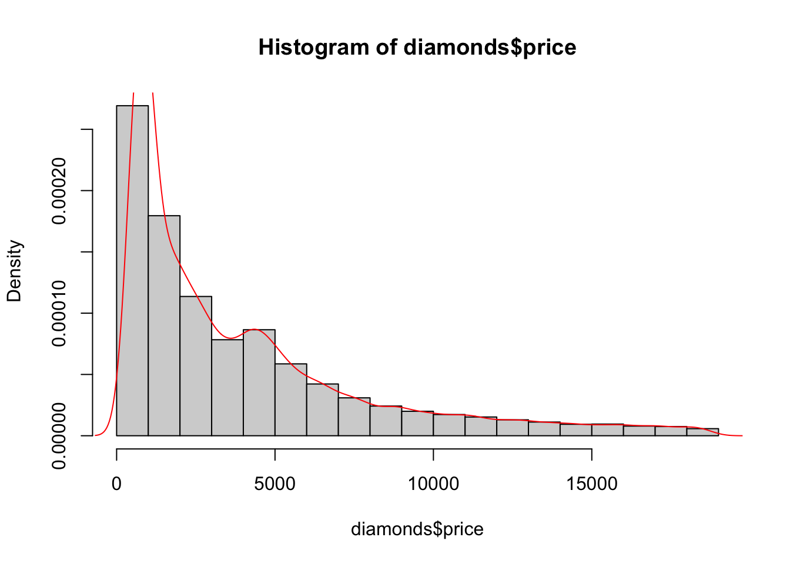

Chapter 2 Plotting
2.1 Plotting in Base R
(useful for exploration of data)
2.1.1 Core Plot Function
Plots data x against data y. (if only x is supplied, the indices will be plotted against their values)
plot(x,y, ...)Optional Arguments
col- colour of points (can use RGB or colour name as a string; can be vector for each point)pch- plotting symbol (cross, circle etc), an integerxlabandylab- labelsxlimandylim- limits in the form of a 2-vector (e.g.xlim = c(20,100)restricts x from 20 to 100)main- Plot Titletype"p"- points (default)"l"- line connecting observations"b"- both points and lines
{kind=link}
2.1.2 Other Plot Functions
hist()- Histogramboxplot()- Boxplotbarplot()- Categorical Bar Charts (usetableto get summary)
Note: you can store plots inside of variables
data("diamonds", package = "ggplot2")
hgram <- hist(diamonds$price, freq = FALSE)str(hgram)## List of 6
## $ breaks : num [1:20] 0 1000 2000 3000 4000 5000 6000 7000 8000 9000 ...
## $ counts : int [1:19] 14524 9683 6129 4225 4665 3163 2278 1668 1307 1076 ...
## $ density : num [1:19] 2.69e-04 1.80e-04 1.14e-04 7.83e-05 8.65e-05 ...
## $ mids : num [1:19] 500 1500 2500 3500 4500 5500 6500 7500 8500 9500 ...
## $ xname : chr "diamonds$price"
## $ equidist: logi TRUE
## - attr(*, "class")= chr "histogram"2.1.3 Adding to Plots
Each plot() function creates a new plot. To add to an existing plot use,
points()- adds a plot of points to an existing plotlines()- shorthand forpoints(x, y, type="l")abline()- adds a \(y=mx+c\) line directly
2.1.3.1 Fitting Lines to Plots
(see linear regression)
lm()- fits a straight line, pass inside ofabline()lowess()- fits a smooth line, pass inside oflines()(fargument controls smoothness)density()- fits a smooth continuous version of a histogram
Example
data("diamonds", package = "ggplot2")
plot(diamonds$carat, diamonds$price, pch = 20)
abline(lm(price ~ carat, diamonds),
col = "red")
lines(lowess(diamonds$carat, diamonds$price, f = 0.05),
col = "green")hist(diamonds$price, freq = FALSE)
lines(density(diamonds$price), col = "red")
2.1.4 Multiple Plots
(often better to just use ggplot2)
To get a grid of all pairwise scatter plots, use pairs()
pairs(mtcars)
pairs(mtcars[,1:4])You can also manually set the grid size (using par(mfrow = c(n,m))) and then populate each grid slot one by one by calling slots
par(mfrow = c(2,1))
plot(diamonds$carat, diamonds$price)
boxplot(diamonds$carat)
par(mfrow = c(1,1)) # <- need this to reset to a single plot!To reset the plotting window to default use dev.off().
2.2 Plotting in ggplot2
(useful for presentation of data)
Loading ggplot2,
# Either ...
library("tidyverse")
# for all tidyverse packages
# OR, for just plotting
library("ggplot2")2.2.1 Main Structure
Starting a plot
Every plot starts with the function ggplot() with the optional arguments:
- data - to specify the data frame containing the variables we later reference
aes()- mapping to specify what variables map to the x axis, y axis, colour legend, etc
For example,
## Warning: package 'tidyverse' was built under R version 4.1.2## Warning: package 'ggplot2' was built under R version 4.1.2## Warning: package 'tibble' was built under R version 4.1.2## Warning: package 'tidyr' was built under R version 4.1.2## Warning: package 'readr' was built under R version 4.1.2## Warning: package 'purrr' was built under R version 4.1.2## Warning: package 'dplyr' was built under R version 4.1.2## Warning: package 'stringr' was built under R version 4.1.2## Warning: package 'forcats' was built under R version 4.1.2ggplot(diamonds, aes(x = carat, y = price))
Axis are labelled and scaled but nothing is plotted yet (as we have not called a “Geom”).
Geoms
A geom_ will add a layer to the plot. Examples of Geoms:
geom_point()- most basic, plotsxagainstyas scatter plotgeom_line()geom_smooth()- smoothed curve (defaukt method is “gam”, can also use “lm”)geom_bar()- barchart (1 variable and counts)geom_col()- barchart (2 variables)geom_boxplot()- boxplot
More unusual ones,
geom_hex()geom_polygon()
aes()
If you want to specify the x and y variables, colour by a property, group by a property, change the point size based on a property etc then you put that information into the aes().
The aes(...) that goes into the original ggplot(aes()) will be inherited by all plots unless overridden. The aes(...) that goes into a particular geom, geom_...(aes()) only applies to that geom.
Labels
xlab("X-axis Label"), ylab("Y-axis Label") and ggtitle("Title") can also be added to the plot in the same way as Geoms.
Alternativily, use + labs(title="Title", x="X-axis", y="Y-axis")
2.2.2 Updating a Plot (Plots in Variables)
data("mtcars")
p <- ggplot(mtcars, aes(x = hp, y = mpg)) +
geom_point()
p + geom_smooth()
p + geom_smooth(method = "lm")
p + scale_y_log10() + scale_x_log10() +
geom_smooth(method = "lm")
p + scale_y_log10() + scale_x_log10() +
geom_smooth(method = "lm") +
geom_vline(xintercept = 100)Here, p stores the basic plot and each time, something different is added to it for a new plot, but without updating p.
2.2.3 Faceting
Faceting enables splitting your data into multiple plots according to a categorical variable.
facet_wrap()- a single variable split- formula notation to indicate splitting variable
~ var - optionally specify number of rows
- formula notation to indicate splitting variable
facet_grid()- two variable split- formula indicating both splitting variables rows_var ~ cols_var
formula indicating both splitting variables rows_var ~ cols_var
For example,
ggplot(mtcars, aes(x = hp, y = mpg)) +
facet_wrap(~ gear) +
geom_point()ggplot(mtcars, aes(x = hp, y = mpg)) +
facet_grid(cyl ~ gear) +
geom_point()2.2.4 Examples
ggplot(diamonds, aes(x = carat, y = price)) +
geom_point(aes(colour = cut), size = 0.2) +
geom_smooth(aes(colour = cut)) +
xlab("Number of carats") + ylab("Price in $")ggplot(mpg, aes(x=displ, y=hwy)) +
geom_point(aes(colour = class))
ggplot(mpg, aes(x=displ, y=hwy)) +
facet_wrap(~class) +
geom_point() +
geom_point(aes(y=cty), colour="red") + #aes() doesn't hold all information!!!
ylab("Fuel efficiency")
ggplot(mpg, aes(x=displ, y=hwy)) +
geom_point(aes(colour=drv)) +
geom_smooth(colour="black") +
geom_smooth(aes(colour=drv))ggplot(mpg, aes(x=class)) +
geom_bar(aes(fill=drv))